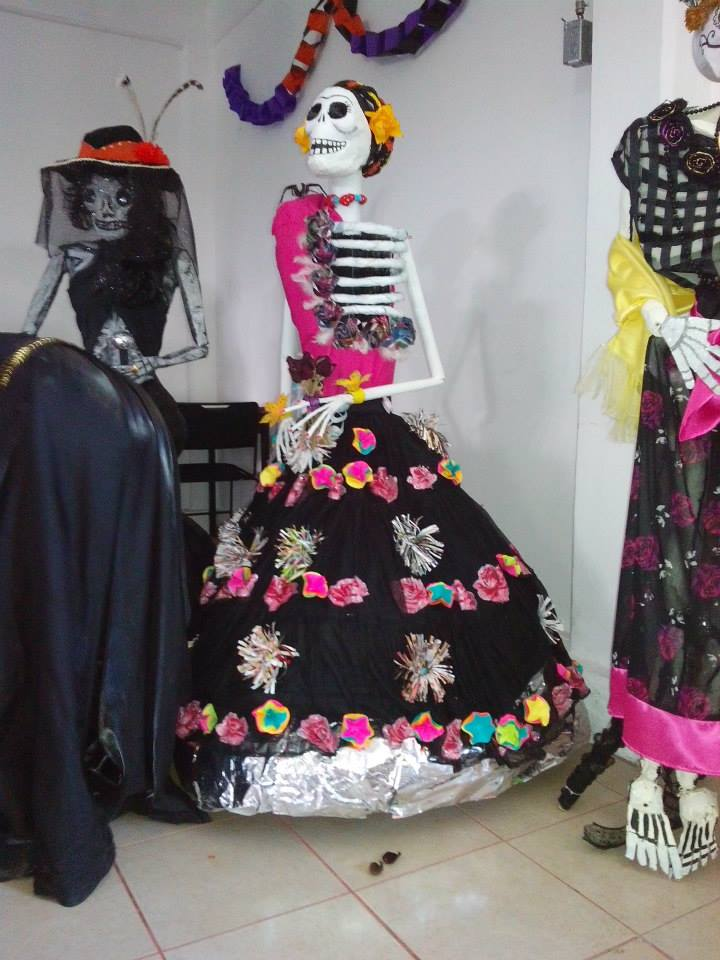

Becas
Perfil
-OPORTUNIDADES:Continuidad de la beca que traen de la secundaria.
-EDUCACION MEDIA SUPERIOR:Aquellos jóvenes que tengan promedio mayor a 7 y
que no tengan reprobado ninguna materia.
-EXCELENCIA:Alumnos con promedio de 9.4 o superior que ingresen o lo
obtengan en el transcurso de la carrera.
-Beca Contra ABANDONO ESCOLAR.
Contamos con Talleres Deportivos y Culturales
